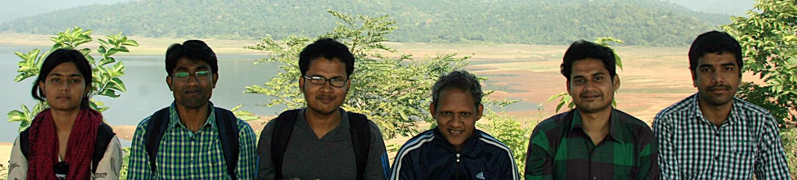

PhD Students
- Lazumla Sherpa (Jointly with Prof. S. Bandhyopadyay)
- Pratik Sarkar (Jointly with Prof. Sukanta Mandal)
- Sandip Giri (Jointly with Prof. Ganesan Mani)
- Arpita Poddar (Jointly with Prof. P. K. Chattaraj)
- Sayan Paul (Jointly with Prof. N. D. Pradeep Singh)
- Bhrigu Chakraborty (Jointly with Prof. P. K. Chattaraj)

Former Members

PhD
- Dr. Saibal Jana
- Dr. Subhajit Mandal (Jointly with Prof. P. K. Chattaraj)
- Dr. Surajit Nandi
- Dr. Davaluri Yogeswara Rao
- Dr. Eshani Das
- Dr. Maya Khatun
- Dr. Saikat Roy
- Dr. Sunanda Panda
- Dr. Moumita Banerjee
- Subhasis Dey
- Tanwi Debnath
MSc
- Neeladitya Chowdhuri
- Divyangna Sharma
- Sahil Das
- Devesh Avasthi
- Sumit Nath
- Rajkumar
- Ayusman Chiranjivi
- Sayan Paul
- Aurodeep Panda
- Kamal Singh Nayal
- Dr. Rajat S. Majumder
- Shubham Bhatt
- Dr. Debankur Bhattacharyya
- Rishabh Upadhyay
- Susovan Ghosh
- Ved Agnihotri
- Dr. Viki Kumar Prasad
- Rekha Banasal
- Ayushi Maheswari
- Anurag Sharma
- Kusal Kishku
- Parmeet Kaur
- Rajul Srivastava
- Dr. Vasudevan S.
- Lalchhandama V.
- Shafeek A. S.
- Chandan Jana